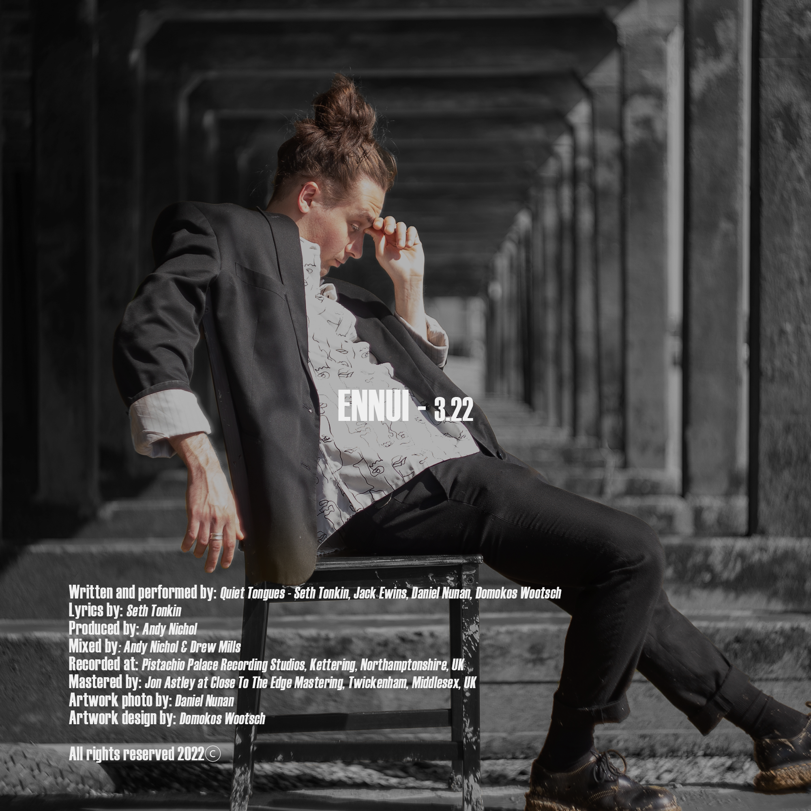

About 'Ennui'
/ɒnˈwiː /– [noun] a feeling of listlessness and dissatisfaction arising from a lack of occupation or excitement.
Grabbing your attention from the off with a deep exhale into shimmering guitars and an undeniable head banging bop, Quiet Tongues’ first single Ennui tackles a state of mind that can feel impossible to escape from. Recorded with Andy Nichol at Pistachio Palace the song keeps building and adding wonderful, gritty textures to make for an exciting debut release that includes flavours of Kasabian, Talking Heads, Nine Inch Nails and FOALS.
STORY TIME - Seth (Singer & Guitarist) was introduced to the word and its meaning after having been to the pub with a friend to watch his beloved football team play on the telly. Within about 10 minutes of that game, they were 3-0 down. He asked his friend how he felt about the whole thing. He shrugged and said: “Ennui”. After having the term explained to him, he couldn’t get over the fact that there was one word to describe such a complex emotion.
The song became about using Ennui as a risky kind of coping mechanism. When something or someone is constantly dragging you down, the only way to cope is to care less and less until you don’t care at all. This state of being then feels like an accessory to your person and a necessity in everyday life. Taken from French, Ennui in its essence becomes boredom, which in a world of constant distraction, we’ve all developed a huge fear of. We all want to be interesting. Nobody wants to see the lights in someone’s eyes fade away during conversation! There’s an underlying sense of urgency in this track that I think sums up the desperation to find something to care deeply about. An energetic sadness that captures the frustration in being unable to escape that feeling of Ennui once it’s taken hold.
DISCLAIMER/APOLOGY - We are not French! Any butchered pronunciations and any grammatical oversights came from a place of love. Promise! (It just sounded better).
Credits
Written and performed by: Quiet Tongues – Seth Tonkin (guitar and lead vocals), Jack Ewins (guitar and backing vocals), Daniel Nunan (bass and backing vocals), Domokos Wootsch (drums, and backing vocals).
Lyrics: Seth Tonkin
Produced by: Andy Nichol
Mixed by: Andy Nichol & Drew Mills
Recorded at: Pistachio Palace Recording Studio, Kettering, Northamptonshire, UK
Mastered by: Jon Astley at Close to the Edge Mastering, Twickenham, Middlesex, UK
Artwork photo by: Daniel Nunan
Artwork edited by: Domokos Wootsch
Lyrics
Ever seen the lights in someone’s eyes?
Fading away,
Fading away?
Glimmer and a spark that’s hard to describe
But we chase every day,
Chase every day
It’s dull to talk about it,
Don’t hang your head around it,
Around it.
Je Suis Ennui
My Accessory
Je Suis Ennui
My Necessity
Dreaming of a night come back to life,
Getting away,
Getting away.
Faint shimmer bright flash what a nice surprise
Are you losing your way?
Are you losing your way?
Nothing to think about dear
Blanked out no I don’t wanna be here,
Be here.
Je Suis Ennui
My Accessory
Je Suis Ennui
My Necessity
Quiet Tongues
With fierce, intricate rhythms, mosaic and dazzling guitars, bittersweet abstract lyricism and an influence ranging from Queens of The Stone Age, FOALS and Tame Impala all the way to Massive Attack and Talking Heads, Quiet Tongues come with a unique approach to Alt Rock that stirs the primal in us all.
Formed in 2018 under the name Modra Luna, the quartet spent the coming years circuiting the London music scene, playing venues such as Oslo Hackney, The Finsbury, Notting Hill Arts Club and Nambucca. The band took the chance presented by the enforced break in 2020 to set a new direction and rebrand.
Returning as Quiet Tongues, they are set to release their debut single Ennui in June 2022, following up with the feet-stomping fan favourite, This Water is Wet, later in the year.
Hi-Res Image Gallery


Branding & Assets


!['Ennui' Cover [Digital Release]](img/ennui/Ennui_cover_front_no_text_FINAL.jpg){kind=link}
![ 'Ennui' Back Cover [CD/Vinyl]](img/ennui/Ennui_cover_back_FINAL.png){kind=link}
Socials
Contact & Management
We are an independent band and our manager is Drew Mills, who can be reached at drewmills@live.co.uk
For bookings, please email quiettongues@gmail.com